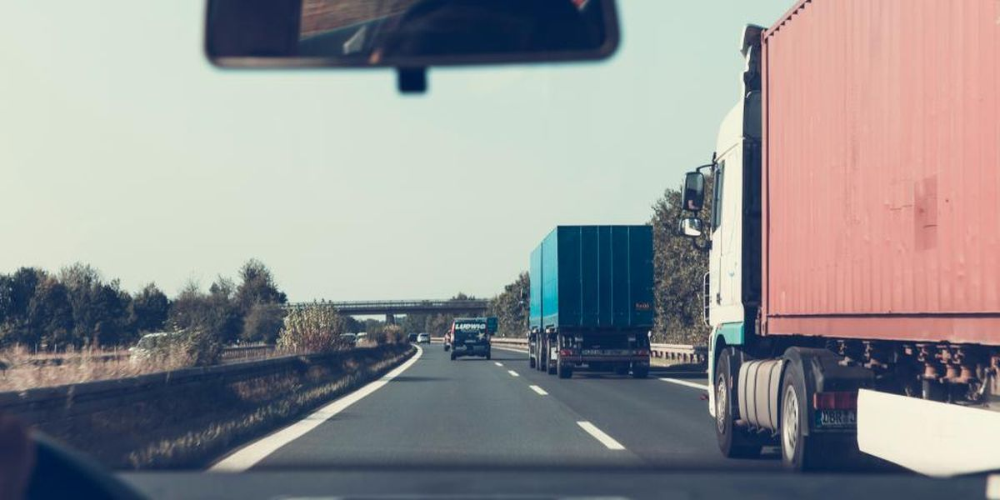

Vargel Lojistik
Logística · Kocaeli · Fundada en 2009 · 85 empleados · 42 cabezas tractoras, 3 almacenes

Hace transporte terrestre de carga completa y parcial para empresas de proveedores de automoción y de gran consumo. La flota trabaja con una ocupación del 93 %, y un tercio de la facturación procede de un único cliente del sector del automóvil.
Equipo
- Selim VargelFundador, director general
- Aysun TekinDirectora de operaciones
- Burak ÖnalJefe de flota y mantenimiento
- Derya KoçResponsable de finanzas